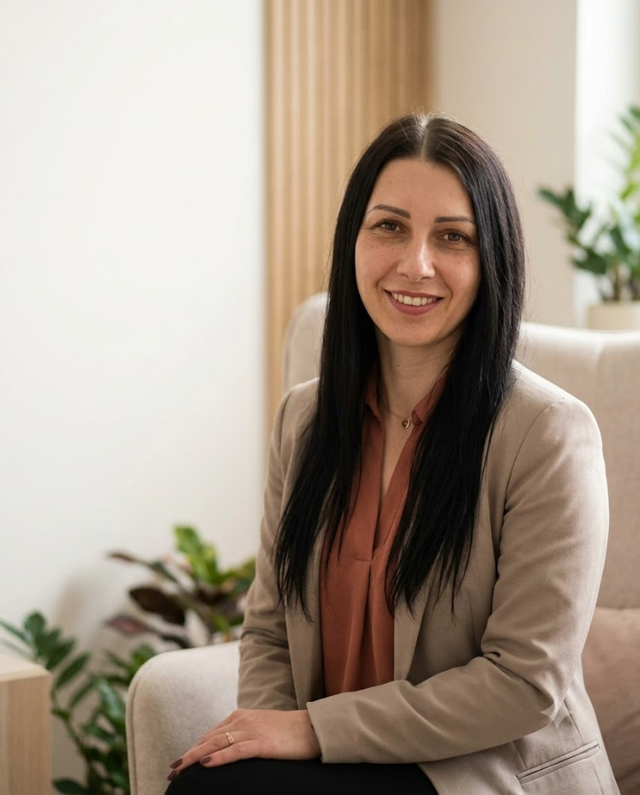
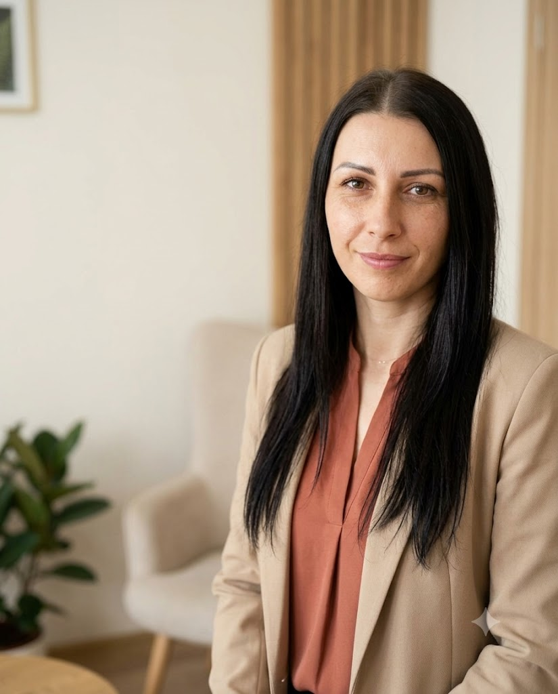

Nazywam się Olena Stakhova. Od blisko 10 lat pomagam dzieciom i nastolatkom rozumieć emocje, a rodzicom — odzyskać spokój i pewność.

Jeśli coś z tej listy brzmi znajomo — nie musisz radzić sobie z tym w pojedynkę.
Strach przed szkołą, rozstaniem, ciemnością. Szukamy źródła i budujemy poczucie bezpieczeństwa.
Złość, wybuchy, wycofanie. Uczę dzieci rozumieć i wyrażać emocje w bezpieczny sposób.
Nowy kraj, nowa szkoła, dwujęzyczność. Wspieram rodziny w łagodnym przejściu przez zmiany.
Wczesne rozpoznanie i wsparcie rozwoju małych dzieci — diagnoza, terapia, praca z rodziną.
Bezpieczeństwo online, profilaktyka i wsparcie po trudnych doświadczeniach w sieci.
Kiedy trudno się porozumieć. Wspólnie odbudowujemy więź, zaufanie i codzienną komunikację.
Pierwsze spotkanie zawsze zaczynamy razem: omawiamy sytuację, potrzeby dziecka i plan wsparcia.
Regularna praca dostosowana do wieku — rozmowa, zabawa, elementy arteterapii i terapii behawioralnej.
Zajęcia grupowe: komunikacja, współpraca, rozumienie emocji i radzenie sobie w relacjach z rówieśnikami.
Dla szkół, przedszkoli i rodziców: profilaktyka cyberprzemocy, integracja, emocje i bezpieczeństwo dzieci.

Jestem psychologiem dziecięcym i młodzieżowym. Swoją drogę zawodową zaczynałam jako nauczycielka i wychowawczyni — dlatego patrzę na dziecko całościowo: widzę nie tylko trudność, ale też kontekst rodziny, szkoły i środowiska.
Pracowałam m.in. w Centrum Specjalistycznym SOS i Fundacji Internationaler Bund Polska, prowadzę warsztaty dla fundacji „Dajemy Dzieciom Siłę” i Instytutu Matki i Dziecka. Jako trenerka metody TeamUp wspieram rodziny z doświadczeniem wojny, a na studiach podyplomowych WSKZ (we współpracy z Uniwersytetem Jagiellońskim) uczę przyszłych specjalistów.
„Dziecko nie jest problemem do naprawienia. Jest człowiekiem, który potrzebuje zrozumienia — a rodzic zasługuje na spokój i wsparcie.”
Początek pracy jako psycholog dziecięcy — szkoła podstawowa i przedszkole
Własny gabinet psychologiczny; praca z dziećmi z niepełnosprawnościami
Kraków — psycholog w Słonecznej Przestrzeni Wsparcia
Centrum Specjalistyczne SOS oraz anglojęzyczne przedszkole „First Step”
Trenerka TeamUp — turnusy SOS Wioski Dziecięce dla rodzin z Ukrainy; zajęcia TUS
Warsztaty dla „Dajemy Dzieciom Siłę” i Instytutu Matki i Dziecka; telefon zaufania Via Viator
Wykładowca psychologii — studia podyplomowe WSKZ we współpracy z UJ
Organizacje i projekty, z którymi pracuję:
Krótko opisz sytuację. Odpowiadam w ciągu 24–48 godzin.
Spotykamy się z rodzicami — poznaję sytuację i potrzeby dziecka.
Wspólnie ustalamy cele, formę i częstotliwość spotkań.
Pracuję z dzieckiem, a Ty zawsze wiesz, na jakim jesteśmy etapie.
Po polsku, ukraińsku, angielsku lub rosyjsku — tak, jak będzie najwygodniej dziecku i Tobie.
Nie. Pierwsze spotkanie jest tylko dla rodziców — spokojnie omawiamy sytuację i wspólnie decydujemy o kolejnych krokach.
Spotkanie trwa 50 minut. Zwykle widzimy się raz w tygodniu — częstotliwość zawsze dostosowujemy do potrzeb dziecka.
Tak — pracuję zarówno w gabinecie w Krakowie, jak i online. Konsultacje dla rodziców świetnie sprawdzają się zdalnie.
Tak. Obowiązuje mnie tajemnica zawodowa psychologa. O wszystkim, co dotyczy dziecka, rozmawiamy wyłącznie z rodzicami.
Napisz kilka słów o swojej sytuacji — odpowiem w ciągu 24–48 godzin i wspólnie znajdziemy dogodny termin.
polski · українська · English · русский — wybierz język, w którym Tobie i dziecku będzie najłatwiej.